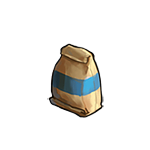

Получено: файл; исходный URL. Изображение подписано на странице-источнике; файл получен с зеркала. Совпадение с оригиналом не проверено. Страница: источник.
Цемент
Мой Мир; историческая таблица, дата редакции не установлена- Тип
- нет данных
- Покупка
- 1 Зб; место покупки не указано
- Продажа
- 500 монет
- Как получить
- Бесплатный подарок. Произвести в мельнице Выиграть в рулетке (ВКонтакте, ZOMBIA; требует сверки).
- Применение
- Участвует в строительстве: практически всего;)
- Особенности
- нет данных
- Версия и дата
- Мой Мир; историческая таблица, дата редакции не установлена


Данные по источнику · Мой Мир · 20.06.2011
Предварительно: один источник; требует сверки. Требуется сверка.
- Покупка
- 1 зомбаксов (по источнику)
- Продажа
- 500 монет
- Применение
- Строительство
Данные по источнику · ВКонтакте, ZOMBIA · 27 Июня 2011, 12:10; дата редакции не установлена
Предварительно: Данные одной исторической фанатской страницы; цифры и подписи изображений требуют сверки. Описание и условия сохранены по колонкам без додумывания.. Требуется сверка.
- Описание материала
- Цемент 500 монет 1 Зомбакс
- Участвует в строительстве
- нет текстовых данных; возможны неподписанные изображения
- Как достать
- Бесплатный подарок. Произвести в мельнице Выиграть в рулетке
- Участвует в создании
- нет текстовых данных; возможны неподписанные изображения
Данные по источнику · браузерная версия; платформа не указана · дата редакции неизвестна
Предварительно: Подписи и последовательность пиктограмм перенесены без автоматического толкования. Названия, цены и направления стрелок требуют визуальной сверки; возможны ошибки самого сайта.. Требуется сверка.
- Колонка 1 в порядке пиктограмм
- [подпись: Цемент; файл cement.png] [подпись: Стоимость (Зомбаксов); файл zombucks.png] 1 [подпись: Продажа; файл moneta.png] 500 [подпись: Бесплатный подарок от друзей; файл podarki.png]
- Колонка 2 в порядке пиктограмм
- [значок: proizvoditsya.png] [подпись: Мельница; файл melnica.png]
- Колонка 3 в порядке пиктограмм
- [значок: stroit.png] [подпись: Склеп; файл sklep.png] [подпись: Снеговик; файл snegovik.png] [подпись: Маяк; файл mayak.png] [подпись: Пирамида; файл piramida.png] [подпись: Волшебный Кролик; файл volshebny_krolik.png] [подпись: Мельница; файл melnica.png] [подпись: Замок; файл zamok.png] [подпись: Башня; файл bashnya.png] [подпись: Бассейн; файл basseyn.png] [подпись: Глаз-алмаз; файл glaz-almaz.png] [подпись: Бизнес-Центр; файл biznes-centr.png] [подпись: Особняк; файл osobnyak.png] [подпись: Останкино; файл ostankino.png]
- Колонка 4 в порядке пиктограмм
- [значок: sosdanie.png] [подпись: Синяя черепица; файл sinyaya_cherepica.png] [значок: strelka.png] [подпись: Снеговик; файл snegovik.png]
- Колонка 5 в порядке пиктограмм
- [значок: bonus.png] [подпись: Флаг Украины; файл flag_ukrainy.png]
Данные по источнику · браузерная Зомби Ферма / Зомби Мания; платформа требует проверки · дата URL не гарантирует дату редакции
Предварительно: Индивидуальная страница прочитана автоматически, подписи значков могут содержать ошибки; даты редакции и независимость от ЗомбиСити не установлены.. Требуется сверка.
- Основной блок страницы и подписи изображений
- Материал [иллюстрация: Цемент] Цемент Цена покупки: 1 [иллюстрация: Зомбаксы] Цена продажи: 500 [иллюстрация: Монеты] Купить Цемент в нужном количестве можно в Обменке игры Зомби Ферма Цемент есть в числе бесплатных подарков, его могут вам дарить друзья. Так же Цемент можно получить за пряник, положенный другу под праздничную Ёлку. Цемент можно создать в постройке: Цемент [иллюстрация: Цемент] = 5 Камни [иллюстрация: Камни] +5000 Монеты [иллюстрация: Монеты] [иллюстрация: Стрелка] Мельница [иллюстрация: Мельница] Цемент можно получить в ответ на разложенные друзьям Пряники: Маленькая ёлочка [иллюстрация: Маленькая ёлочка] Большая ёлка [иллюстрация: Большая ёлка] Огромная ёлка [иллюстрация: Огромная ёлка] Цемент можно накопать под: Тыква большая [иллюстрация: Тыква большая] Костяной забор [иллюстрация: Костяной забор] Костяной забор [иллюстрация: Костяной забор] Цемент можно получить, разбив пасхальное яйцо: Дизайнерской [иллюстрация: Дизайнерской] Звездное [иллюстрация: Звездное] Цемент участвует в создании материалов: Синяя черепица [иллюстрация: Синяя черепица] Кирпичи [иллюстрация: Кирпичи] Стена [иллюстрация: Стена] Цемент участвует в строительстве некоторых зданий: Часовая башня [иллюстрация: Часовая башня] Идол воздуха [иллюстрация: Идол воздуха] Идол воды [иллюстрация: Идол воды] Ангар за зомбаксы [иллюстрация: Ангар за зомбаксы] Бассейн [иллюстрация: Бассейн] Башня [иллюстрация: Башня] Бизнес-Центр [иллюстрация: Бизнес-Центр] Волшебный кролик [иллюстрация: Волшебный кролик] Глаз-алмаз [иллюстрация: Глаз-алмаз] Замок [иллюстрация: Замок] Китайская стена [иллюстрация: Китайская стена] Китайская стена [иллюстрация: Китайская стена] Мельница [иллюстрация: Мельница] Маяк [иллюстрация: Маяк] Особняк [иллюстрация: Особняк] Останкино [иллюстрация: Останкино] Свобода [иллюстрация: Свобода] Пирамида [иллюстрация: Пирамида] Склеп [иллюстрация: Склеп] Снеговик [иллюстрация: Снеговик] Стоунхендж [иллюстрация: Стоунхендж] Пермь слева [иллюстрация: Пермь слева] Пермь справа [иллюстрация: Пермь справа] Колодец в подножье [иллюстрация: Колодец в подножье] Печка [иллюстрация: Печка] Вишнёвый автомат [иллюстрация: Вишнёвый автомат] Изумрудная вышка [иллюстрация: Изумрудная вышка] Изумрудная стена [иллюстрация: Изумрудная стена] Изумрудная мельница [иллюстрация: Изумрудная мельница] Изумрудный маяк [иллюстрация: Маяк-призрак] Башня-призрак [иллюстрация: Башня-призрак] Стена-призрак [иллюстрация: Стена-призрак] Маяк-призрак [иллюстрация: Маяк-призрак] Мельница-призрак [иллюстрация: Мельница-призрак] Ужасная мельница [иллюстрация: Ужасная мельница] Ужасный маяк [иллюстрация: Ужасный маяк] Полярная печка [иллюстрация: Полярная печка] Шаттл Tic Tac [иллюстрация: Шаттл Tic Tac] Купол [иллюстрация: Купол] Перевал №2 [иллюстрация: Перевал №2] Цемент можно выиграть в рулетках: Флаг Германии [иллюстрация: Флаг Германии] Флаг Казахстана [иллюстрация: Флаг Казахстана] Флаг Украины [иллюстрация: Флаг Украины] Флаг Великобрита [иллюстрация: Флаг Великобритании] Флаг Франции [иллюстрация: Флаг Франции] Флаг Аргентины [иллюстрация: Флаг Аргентины] Флаг Мексики [иллюстрация: Флаг Мексики]
Текст источника без реконструкции
Участвует в строительстве: практически всего;)
Связанные сущности
- Школа — упоминается в стадиях или производстве Школы